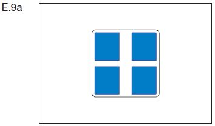
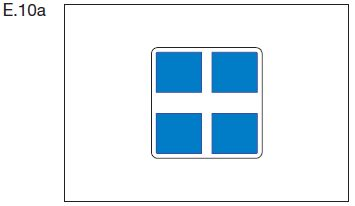
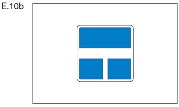
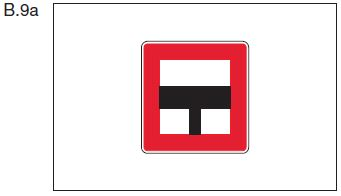
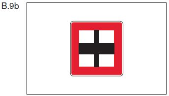
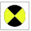

| Die benutzte Hauptwasserstraße trifft auf eine von beiden Seiten einmündende Nebenwasserstraße. |  |
| Die benutzte Hauptwasserstraße trifft auf eine von Steuerbord einmündende Nebenwasserstraße. | E.9b |
| Die benutzte Hauptwasserstraße trifft auf eine von Backbord einmündende Nebenwasserstraße. | E.9c |
 | |
| Die benutzte Nebenwasserstraße trifft auf eine von beiden Seiten einmündende Hauptwasserstraße. |  |
| Die benutzte Nebenwasserstraße mündet in eine Hauptwasserstraße ein. |  |
|  |  |
| Ein rotes Licht, Zeichen A.1 (Anlage 7), mit einem weißen Pfeil (Abschnitt II Nummer 2 Buchstabe c der Anlage 7) zeigt an, dass die Einfahrt in den in Pfeilrichtung gelegenen Hafen oder in die in Pfeilrichtung gelegene Nebenwasserstraße verboten ist. | A.1 Abschnitt II Nr. 2 Buchstabe c |
| Ein gelbes Funkellicht (Zeichen E.12a der Anlage 7) an einer Hafenmündung oder der Mündung einer Nebenwasserstraße zeigt an, dass ein Fahrzeug ausfährt und die Einfahrt infolgedessen mit Vorsicht zu erfolgen hat. Ein Fahrzeug in der Hauptwasserstraße muss daraufhin, soweit notwendig, seinen Kurs und seine Geschwindigkeit ändern. | E.12a |  |